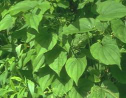
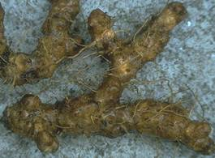

HORT 282 :: Lecture 21 :: MEDICINAL YAM

MEDICINAL YAM
(Dioscorea sp., Dioscoreaceae)
Diosgenin, obtained from Dioscorea tubers, is the major base chemical for several steroid hormones including sex hormones, cortisone, and other corticosteroids and is the active ingredient in the oral contraceptive pill. The growing need for steroidal drugs and the high cost of obtaining them from animal sources led to a widespread search for plant sources of steroidal sapogenins; which ultimately led to the identification of the genus Dioscorea as the most promising one.
This genus Dioscorea belonging to family Dioscoreaceae with over 600 species is widely distributed in tropical world. Some of the species like D.alata and D.esculenta are under cultivation for long time for their edible tubers. There are about 15 species of this genus containing diosgenin. Among this, D.floribunda, D.villosa, D.composita etc. are widely grown for diosgenin production.
 |
 |
The major Dioscorea producing countries are Mexico, Guatamala, Costa Rica, India and China. The estimated world consumption of diosgenin is somewhere between 800 to 1000 tonnes per year. India produces only 25 tonnes of diosgenin annually mainly from the natural source and to be self sufficient, India has to step up its production to the tune of about 200 tonnes of Diosgenin per year. The cultivation hints for D. floribunda is dicussed here.
The best adapted species in Kamataka, Assam, Meghalaya, Tamil Nadu, Goa, & Andaman is D.floribunda, an introudction from Mexico. It produces compact tubers at a shallow depth. The diosgenin content varies from 2 to 7 per cent depending on the age of the tubers.
Climate and soil
It is a tropical species preferring a tropical climate without extremity in temperature. It is adapted to moderate to heavy rainfall areas. Dioscorea plants can be grown in a wide variety of soils, but light soil is good as harvesting of tubers is easier in such soils. Extremely heavy clay soils are, in general not recommended, as they restrict tuber growth and make harvesting difficult. Dioscorea tolerates fairly wide variation in soil pH, though very acid soils should be avoided, the ideal soil pH being 5.5 to 6.5.
Varieties
The Indian Institute of Horticultural Research, Bangalore has released so far two improved varieties.
1. FB(c)-l: This is a composite strain of D. floribunda, which has been released for commercial cultivation. This is a vigorous growing strain relatively free from diseases: This has a diosgenin content of 3 to 3.5 per cent. It is suitable for cultivation around Bangalore and Coorg (Karnataka), Goa, Assam, Maghalaya, Tamilnadu, Maharashtra and Andaman.
2. Arka Upkar: This is a high yielding clone released recently. The plants are very vigorous with a stout, robust vine, bearing broad dark green leaves: The tuber branches are thick, broad and deep. It has a higher diosgenin content of 3.5 to 4.0 per cent.
Propagation
Dioscorea floribunda can be propagated by tuber pieces, single node stem cuttings or seed. Commercial planting is normally established by tuber pieces only. Propagation through seed progeny is variable and it may take longer time to obtain tuber yields.
Propagation from tuber pieces is accomplished by cutting the tubers into pieces weighing about 50-70 g each. Three types of tuber pieces can be distinguished for propagation purpose. viz (1) Crown, (2) Median and (3) Tip. Crowns produce new shoots within 30 days after planting, since they have preformed buds. Medians and tips may take up to 100 days to sprout. Crowns are therefore preferred for commercial planting. However, if there is a shortage of material, median and tip portions can be used for planting. Dipping of tuber pieces for 5 minutes in 0.3% solution of Benlate followed by dusting the cut ends with 0.3% Benlate in talcum powder before planting or storage in moist sand beds effectively checks the tuber rot. This treatment is very essential for obtaining uniform stand of the crop. The best time for planting is by the end of April so that the new sprouts will grow vigorously during the rainy season commencing in June in India.
For rapid multiplication of the elite materials in the initial stages, single leaf node cuttings can be adopted. The cutting consists of a single leaf with petiole and about 0.8 cm of the stem. Such cuttings are prepared from non-flowering plants. They are pre treated with 500ppm of IBA solution by quick dipping and are planted in the mist chamber in sand beds. Within 8-10 weeks, these cuttings are transferred to plastic bags containing equal mixtures of sand, soil and farm yard manure. They will be ready for transplanting in the main field in six months time. This method is not recommended for commercial planting as the growth is very slow but useful to initially multiply the elite materials in larger number.
For raising a crop from seed, fresh seed should be sown in 8 cm x 12 cm plastic bags in the month of February. Polythene bags may be filled up with a pot mixture containing equal parts of sand, soil and farm yard manure. Vermiculite should be used on the top. Atleast two well filled seeds may be sown in each plastic bag at a depth of 0.5 to 1.0 cm. The nursery may be protected from drying by light shade. The bags may be watered with care, lightly and frequently. The germination process completes within four weeks. The seedlings being a vine, it should be supported promptly with thin twigs.
The best season for transplanting the/seedlings in the fields is June-July. Vigorous seedlings may be alone transplanted and others may be discarded. The bottom and sides of bag may be cut before transplanting so as to transplant the seedlings without disturbing the root system. As the progenies raised from seeds are highly variable and their growth is slow, this method is not recommended for commercial plantations.
Planting
Land should be prepared thoroughly till a fine tilth is obtained. Deep furrows should be made at 60 cm distance with plough. The stored tuber pieces are ready for planting, seedlings or single node stem cuttings should be planted in furrows with 30 cm between the plants for one year crop and 45 cm for two year crop. The tuber pieces are planted at about 0.5 cm below the soil level. The new sprouts should be staked immediately. After sprouting is complete, the plants could be earthed up. Soil from the ridges may be used for earthing up so that the original furrows will become ridges and vice verse.
After care
Dioscorea vines need support for their optimum growth and hence the vines are trained over pandal system or trellis.
Weeding
Initially, the vines are weak and tender and can not compete efficiently with the surrounding weeds. Periodic hand weeding, as and when necessary, is essential for the first few months. Experience has shown that once the plants have climbed up on the pandal, the weed populations considerably reduced due to shading. The plants by this stage can also compete more successfully with weeds.
Manures and Fertilizers
D.floribunda requires high organic matter for good tuber formation. Besides a basal dose of 18 to 20 tonnes of per ha, a complete fertilizer dose of 300 Kg nitrogen, 150 Kg phosphorous and 150 Kg of potassium should be applied per hectare. Phosphorous and potassium should be applied in two equal doses one after the establishment of the crop during May-June and the other during vigorous growth period of the crop (August- September).
Irrigation
Irrigation may be given at weekly intervals in the initial stage and afterwards at about 10 day’s interval. However during rainy season no ~irrigation is needed. In Anamalais, it is raised under pure rainfed conditions.
Interopping
Intercropping with legumes like cowpea, horse gram, duster bean and French bean has been found to smother weeds and also provide an extra income without adversely affecting' the tuber yield and diosgenin content.
Duration
The diosgenin content tends to increase with age (2.5 to 3:0 per cent during the first year and 3.0 to 3.5 percent in the second year) and also the tuber yield and hence a two year crop is found to be more economical.
Harvesting
The tubers grow to about 25 to 30 cm depth and hence harvesting is done by manual labour. The best season for harvesting is Feb- March, coinciding with the dry period. On an average 50 to 60 tonnes of fresh tubers can be obtained from one hectare in two years duration.
Plant Protection
The major pests of Dioscorea are the aphids and Red spider mites. Aphids occur more commonly on young seedlings and vines. They feed on the young leaves and stem. Young leaves and vine tips eventually die if aphids are not controlled. Older growth is seldom affected. Red spider mites attack the underside of the leaves at the base near the petiole. Severe infestations result in necrotic areas, which are often attacked by fungi. Both aphids and spider mites can be very easily controlled by 0.5 a.i. Kelthane. No serious disease is reported to infect this crop.
- Alkaloid content present in medicinal yam is ____________
- Which species of Dioscorea contain higher amount of Diosgenin?
- Example of a variety in Medicinal yam.
- Propagation of medicinal yam is _______________
- Economic part of medicinal yam ________________
| Download this lecture as PDF here |